ASYA'DA EĞİTİM · BRAND STUDIO
ASYA'DA EĞİTİM · BRAND STUDIO
INSTAGRAM STUDIO · PHASE 1B — ART DIRECTION & VISUAL QUALITY
Ajans kalitesinde
dokuz kare.
Faz 1 tel-kareydi; burası bitmiş iş. Üç mini-carousel (kapak + içerik + kapanış), 1080×1350 gerçek PNG çıktılar. Aynı marka, üç farklı kompozisyon — ortalanmış başlık, tekrar kartlar, hap butonlar ve düz zeminler yok. Faz 0 ve Faz 1 tarihsel araştırma olarak duruyor.
Kimden ne öğrendik?
Düzen kopyalanmadı; ilkeler çıkarıldı. İstatistik blogları değil, gerçek tasarım işleri.
- V1 · RISD × Gretel — modüler grid + katmanlı ifade, soru-odaklı dil. İlke: tipografi imzası tamamdan eksik uca esner.
- V2 · Parsons / The New School × Pentagram (Paula Scher) — ısmarlama font, kilitleri asla yeniden çizme kuralı. Bizim kanonik disiplinle birebir.
- V3 · UAL × Kind Studio (2024 mezuniyet) — stabil kimlik üstüne kampanya katmanı; 3D çiçekler gibi tekil, geçici jestler.
- V4 · Spotify Wrapped (şirket içi ekip) — veri hikâyeye dönüşür; "ham, oyuncu, kaotik enerji"; paylaşılabilir kartlar, mixtape kurgusu.
- V5 · Tate × Wolff Olins / North — dinamik logotipler; posterler aile gibi durur ama her sergi farklıdır. Akış tutarlılığının modeli.
- V6 · Barbican × North / In-Col — brütalist tipografinin dijital-izleyici için kinetik hale gelişi; marka bekçiliği pratiği.
- V7 · Tate Teens — gençlere yaklaşılabilirlik, yaratıcı özgüven inşası; didaktik değil katılımcı dil.
- V8 · DAAD USA (@daad.usa) — elçi devralmaları + ipuçları; kurum ciddiyeti öğrenci sesiyle yumuşar.
- V9 · NUS Singapore (@nus_singapore) — kampüs günleri, hareket vaat eden kapaklar.
- V10 · Behance carousel topluluğu — yüksek beğenili minimal tipografik carousel'ler; boşluk cesareti.
- V11 · Canva 2025 trendleri (Meaningful Creations) — scrapbook etkisi, el yazısı, cesur tip, görüntü üstüne kalın sans; "yazına güven" ilkesi.
- V12 · Adpicto/Socialinsider 2026 ölçütleri — kapak sonucun %80'i; kaydetme odaklı dağıtım; tek fikir/slayt (Faz 1'den taşınan teknik zemin).
Üç mod, tek marka
470px Jost numerals, dönmüş folio, mürekkep şeridi üstünde krem söz. Ritim: kapak şoku → numaralı hamleler → tek kelimelik kapanış.
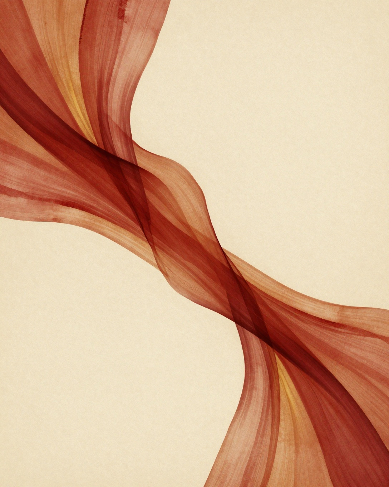
Belgesel kampüs karesi, mürekkep yıkama, dikey KYOTO, amber göz etiketi. Ritim: atmosfer kapağı → bölünmüş an → panelli kapanış.
Gece ızgara üstünde VS halkası; indekste renk kodlu barlar (kırmızı HK, amber SG); dikey yan lejant. Ritim: düello kapağı → veri → hüküm kapanışı.
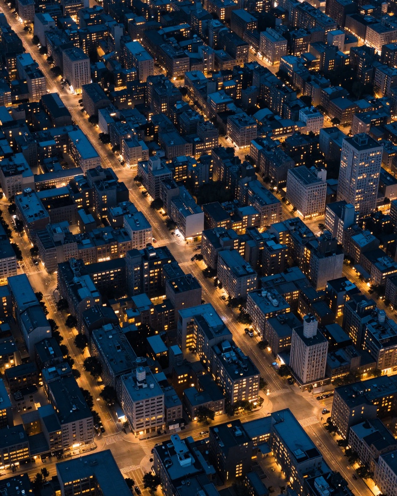
Amber yalnızca rakam, halka çizgisi ve vurgularda — onay bekliyor. Kırmızı her slaytta tek vuruş. KÂĞITMÜREKKEPKIRMIZIAMBER*
Üç mini-carousel
Her izleyicide kapak + içerik + kapanış. Mühür yalnızca kapaklarda (96px); kapanışlarda D-04 (220px, min 200px). Örnek veriler rozetli; C hikâyesi kurgusal-örnek işaretli.
A — Son 30 gün: Çin başvurusu · editoryal tipografi · CTA: Görüşme
B — Kyoto'da bir dönem · fotoğraf anlatısı · kurgusal örnek senaryo · CTA: Kaydet
C — İki şehir, iki bütçe · grafik bilgi · rakamlar örnek · CTA: Başvur
Dokuz kapak, tek akış
Üç carousel kapağı + aynı gramerle altı yeni kapak. Tanınma mühür + renk + Jost'tan; tekrar yok: foto/tipo/grafik modlar dönüşümlü, kırmızı her karede tek vuruş.
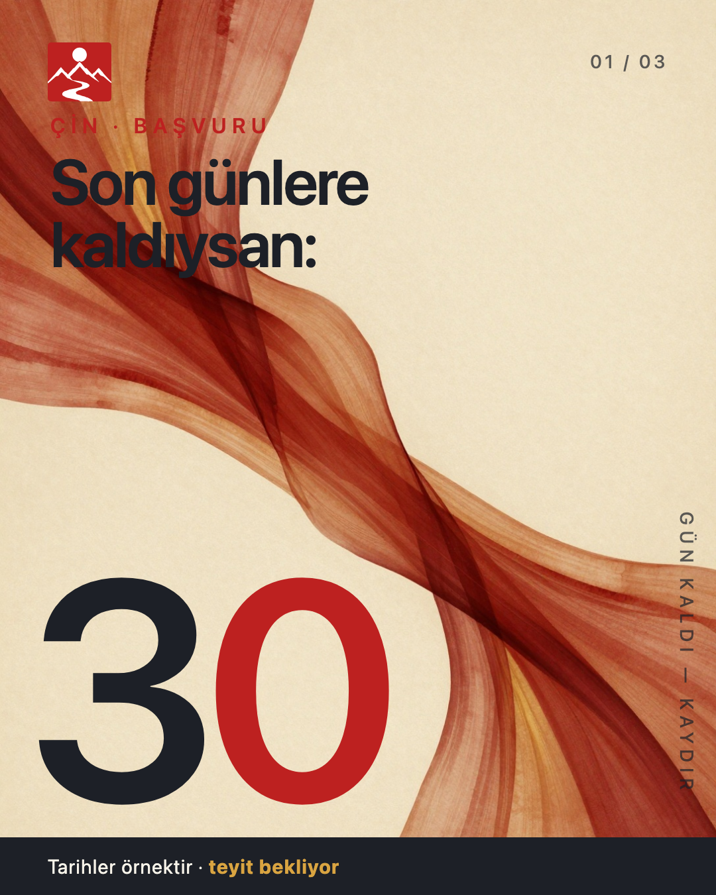
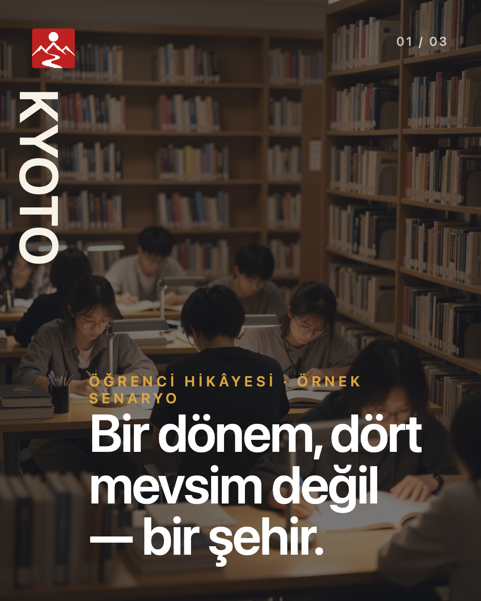
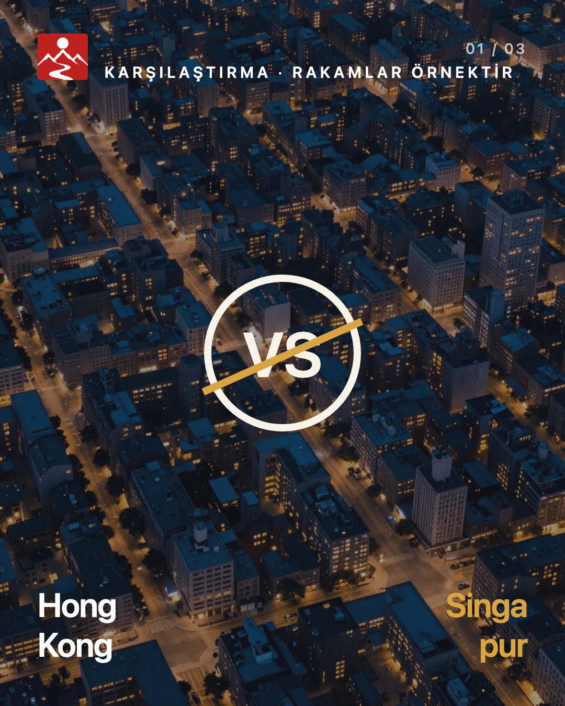
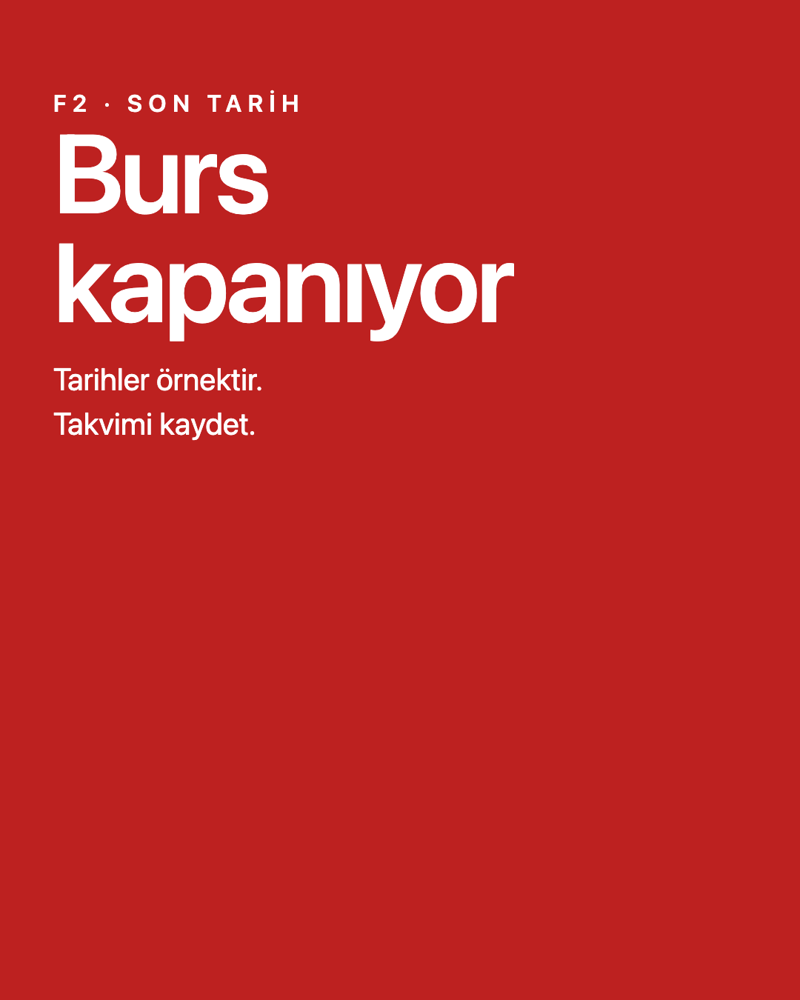
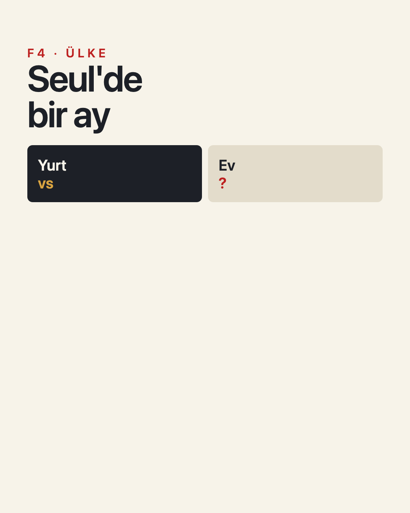
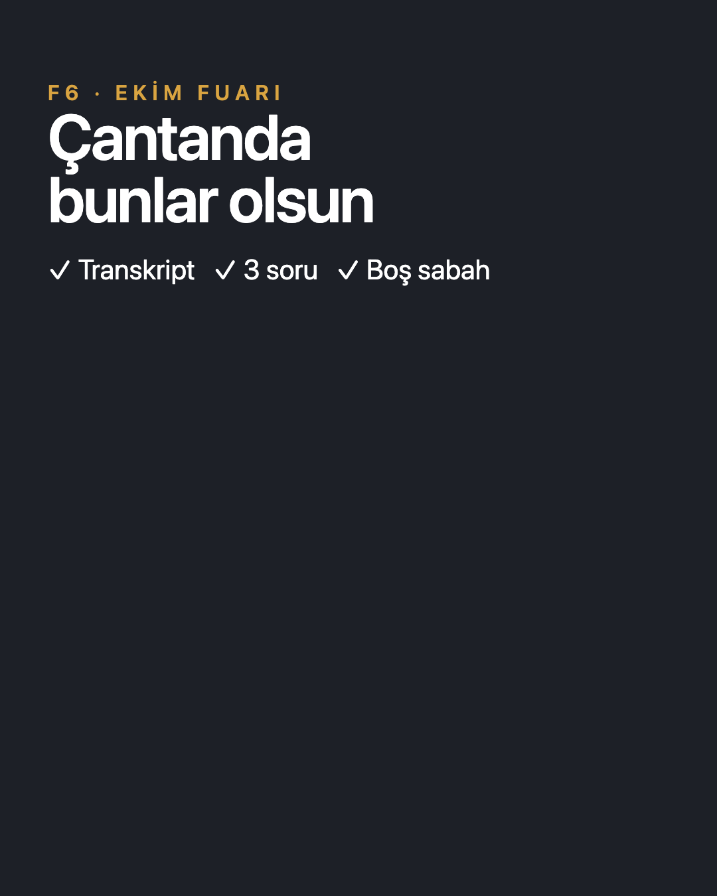
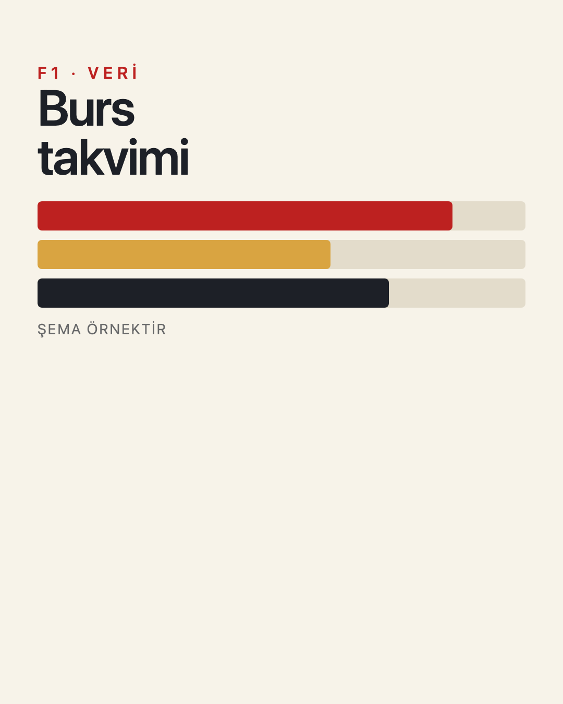
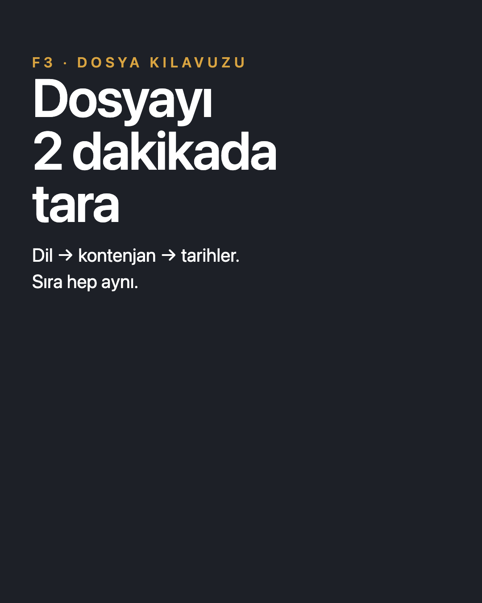
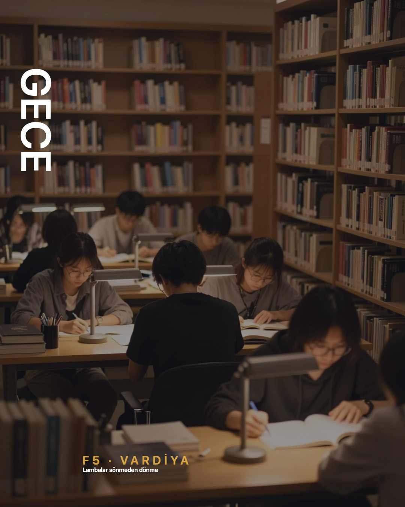
Ne tuttu, ne riskli?
Özgünlük
Dev "30", dikey KYOTO, VS halkası ve yan raylar birbirine benzemiyor; üç mod da Kanva şablon dilinin dışında. Skor değil, kanıt: hiçbiri ortalanmış başlık + hap buton formülünü kullanmıyor.
Mobil etki
Kapak başlıkları 390px telefonda ~35px etkili; folio ve rozetler okunur aralıkta. D-04 kapanışlarda 220px (min 200px) — telefonda ~80px; mühür kadar değil, imza kadar okunur.
Riskler
C'nin tüm rakamları örnek — gerçek veri girilmeden yayınlanamaz. B'deki yapay zekâ yüzleri "kurgusal örnek" rozetine bağımlı. Amber onay bekliyor; kırmızıya dönüş planı hazır.
Sonraki adım önerisi
Gerçek veri girişi (C), beşinci fotoğraf anı (B), kapaklara 90 karakter sınırı. 12 gönderilik deneye geçmeden önce veri teyit süreci tanımlanmalı.
Ne değişmedi?
Mühür ve D-04 manifestteki tam SVG'ler (yerleşim/boyut dışında değişiklik yok). Görüntü modeli yalnızca 2 zemin sanatı üretti (şerit + ızgara); diğer 6 kare Faz 1 rasterleri. Tipografi ve kilitler deterministik HTML/SVG; çıktılar gerçek 1080×1350 PNG. Doğrulayıcı PASS (15 kayıt). Yeni stil kanonikleşmedi.
Faz-1B üretim manifestosu → · Kanonik manifest →
Mühür SHA-256: 8f5d46f0302c4cc7e3765d3bfce9445f842dbd92f1e0f8fbe99f9f509c77e11a